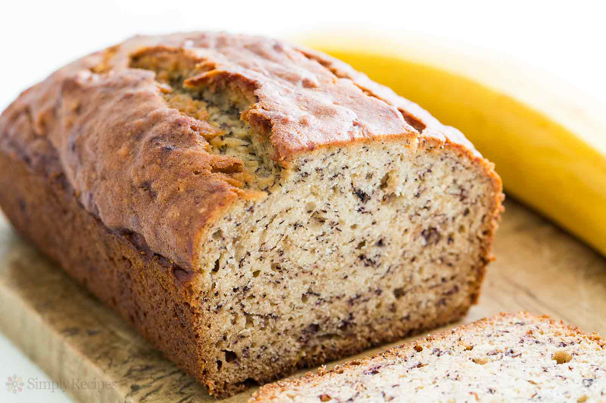

Best Banana Bread Recipe
This is the awesomest Banana bread recipe you will ever make! With melt in your mouth goodness and simple ingredients this will be your go to favorite!

Ingredients
- 2 cups of all purpose flour
- 1 teaspoon baking soda
- 1/4 teaspoon salt
- 1/2 cup butter
- 3/4 cup brown sugar
- 2 large eggs
- 2 cups mashed overripe bananas
Directions
- Preheat oven to 350 degrees F (175 degrees C). Lightly grease a 9x5 inch loaf pan.
- In a large bowl, combine flour, baking soda and salt. In a separate bowl, cream together butter and brown sugar. Stir in eggs and mashed bananas until well blended. Stir banana mixture into flour mixture; stir just to moisten. Pour batter into prepared loaf pan.
- Bake in preheated oven for 60 to 65 minutes, until a toothpick inserted into center of the loaf comes out clean. Let bread cool in pan for 10 minutes, then turn out onto a wire rack
Nutrition Facts
Per Serving:
228.9 calories; protein 3.8g 8% DV; carbohydrates 34.8g 11% DV; fat 8.8g 14% DV; cholesterol 51.3mg 17% DV; sodium 222.9mg 9% DV.